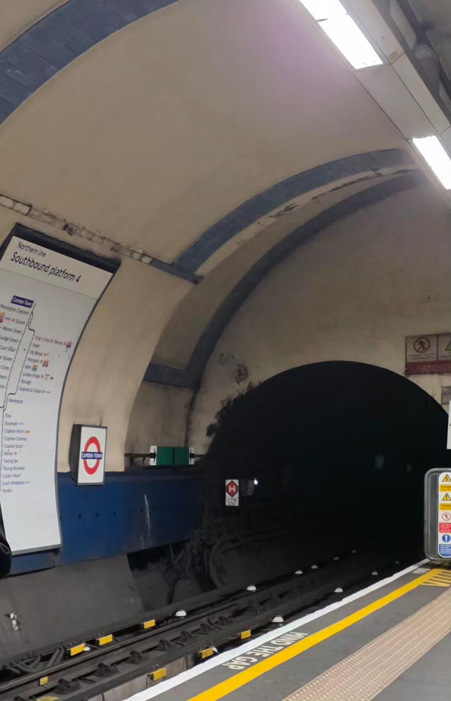

Echoes Beneath the Thames
How a 3.2-mile experiment in 1890 London established the template for the modern urban metro
1. A small line beneath the river
On 4 November 1890, Edward, Prince of Wales, the future Edward VII, turned a golden key at Stockwell station in south London, switching on the electric current of a new underground railway running beneath the Thames. Public service began just over six weeks later, on 18 December 1890. The line ran 3.2 miles (5.1 km) in twin tunnels from Stockwell to King William Street, just north of London Bridge, with six stations, electric locomotives hauling three short carriages, and a flat two-penny fare collected at a turnstile regardless of distance. The carriages were narrow, fitted with high-backed cushioned seats and only tiny windows set high under the roof, on the reasoning that there was nothing to see in the dark anyway; the padded seating and enclosed, windowless feel earned them the nickname "padded cells," a detail recorded in the London Transport Museum's collection.
It looked like a curiosity. It was, in fact, the prototype.
The City & South London Railway (C&SLR) was the first deep-level electric tube railway in the world. Electric traction itself was not new, Werner von Siemens had electrified a short tramway at Gross-Lichterfelde near Berlin in 1881, Magnus Volk had opened his seafront electric railway in Brighton in 1883, and Frank Sprague had electrified the streetcar system of Richmond, Virginia in 1888. What the C&SLR proved was that the combination of electric traction with deep-bored, grade-separated tunnels could move large numbers of people through the densest part of a major city. Within a decade two more deep tubes had opened in London: the Waterloo & City in 1898 and the Central London Railway in 1900, the latter so famously cheap it became known as the "Twopenny Tube." Within twenty years, Budapest, Paris, Berlin, and New York had copied the formula. Within a century, more than two hundred cities on six continents would be built around it.
2. What 1890 was actually solving
To understand why 1890 mattered, it helps to remember what came before. London's Metropolitan Railway, the world's first underground line, had opened twenty-seven years earlier, in 1863. It was built by the cut-and-cover method: a deep trench dug into the street, tunnel walls built up from inside, then the whole thing roofed over. Steam locomotives hauled gas-lit wooden carriages through shallow tunnels with ventilation grates punched to the surface every few hundred yards.
The system worked, after a fashion. It also filled the carriages with coal smoke, choked the platforms, and could only be built where streets were wide enough to be torn open. London's medieval core (narrow, crowded, layered with sewers and gas mains) was effectively off limits.
The deep tube changed both constraints at once. Sir Marc Isambard Brunel had patented a tunnelling shield in 1818 and used a version of it to bore the Thames Tunnel, begun in 1825 and completed in 1843. James Henry Greathead refined the design, adding hydraulic rams to drive the shield forward, and used the improved version on the C&SLR to bore round tunnels through London clay without disturbing the buildings above. Because deep tunnels could not be ventilated like shallow ones, steam was ruled out from the start. The C&SLR was originally designed for cable haulage powered by stationary steam engines. When that arrangement broke down during construction, amid contractual and technical difficulties with the cable-haulage contractor that left the project without a viable traction solution, the directors turned to a then still-experimental alternative: electric traction, with a fleet of small electric locomotives built by Mather & Platt of Manchester. The decision was consequential rather than improvised: the C&SLR's directors and engineers had been monitoring developments in electric traction closely before committing to it as the traction system for the completed line. Smoke vanished. The depth became an asset. Lines could now follow demand instead of street geometry.
That combination, deep bore plus electric traction, is the engineering core of every metro system built since.
3. The pattern spreads
Once London had proved it worked, the model went global. Budapest opened the first metro on continental Europe in 1896. Boston followed in 1897 with North America's first subway, although strictly speaking the Tremont Street tunnel carried streetcars rather than purpose-built rapid-transit trains; the first proper rapid-transit metro on the continent was the New York City Subway, opened in 1904. Paris launched the Métro for the 1900 Exposition Universelle; Berlin's U-Bahn followed in 1902. Tokyo's Ginza Line opened in 1927, the first in Asia. The Moscow Metro arrived in 1935. Mexico City opened in 1969. Beijing began internal trial service on Line 1 in October 1969 and opened it to the general public in 1971. Hong Kong opened the MTR in 1979, Singapore its MRT in 1987, Shanghai its metro in 1993. Hanoi's first metro line (the Cát Linh–Hà Đông line, designated 2A in Hanoi's master plan) opened on 6 November 2021, giving Vietnam its first urban rapid transit. Riyadh's six-line, fully driverless metro opened in phases beginning 1 December 2024. Jakarta opened its first MRT line in 2019, the 15.7 km North–South Line running from Lebak Bulus to Bundaran HI, with 13 stations on a mix of elevated and underground track, and is now extending that corridor northward toward Kota Station.
According to the International Association of Public Transport (UITP), 202 cities worldwide now operate 217 metro networks, serving more than one billion people. Asia-Pacific accounts for roughly 58% of global metro ridership, with China alone responsible for about 29%. According to figures published by the Beijing municipal government, Beijing's subway reached approximately 879 kilometres of operational track by the end of 2024, placing it among the largest single-city metro networks in the world by total length.
The shape varies (rubber-tyred in Paris and Mexico City, driverless in Copenhagen and Dubai, palatial in Moscow, modular in Singapore) but the underlying logic has not changed since 1890. Run electric trains through a grade-separated right-of-way, isolated from cars and pedestrians, at high frequency, and the result is a piece of infrastructure that scales in a way no road network can.
4. The math that keeps winning
The reason metros keep getting built in dense cities is brutal and unsentimental: at urban density, the numbers do not work for any other mode.
A heavy-rail metro line, with long trains running at tight headways, can move many tens of thousands of passengers per hour in a single direction, and real-world peaks on the busiest lines in cities like Hong Kong, Tokyo, Beijing, and Moscow run into those tens of thousands per hour. A single lane of urban freeway cannot come close: it is limited to a stream of cars carrying, on average, only one or two people each, so even at full flow it moves a small fraction of what a rail track does in the same width of right-of-way. No amount of widening, signalling improvement, or autonomous-vehicle optimisation closes that gap, because the limit on roads is geometric (cars need following distances, intersections, parking) while the limit on rail is operational and electric, and yields to better signalling, longer trains, and shorter headways.
Several other properties compound the advantage. Electric traction is substantially more energy-efficient per passenger-kilometre than internal combustion. Grade separation removes the single variable that breaks every other urban mode, surface traffic, and so journey times become predictable. Predictability is what makes a metro usable not just as transport but as urban infrastructure: it lets people live further from where they work without their day collapsing into uncertainty.
The advantage is not unconditional. Metros are expensive to build and operate and require a density-and-ridership threshold to be justifiable; systems built below that threshold, such as the Detroit People Mover and the Baltimore Metro Subway, have struggled with thin patronage for decades relative to what they cost to build. But where demand is sufficient, comparative research across cities has generally found that metros, and notably not trams alone, are associated with significantly lower car mode shares. Above the ridership threshold at which it becomes rational to live without a car at all, the C&SLR's logic still wins.
5. The cities the math built
Tokyo is the clearest illustration. Its two subway operators, Tokyo Metro and Toei Subway, carry billions of journeys a year between them, but the subway is only a fraction of the picture. Add the vast JR East commuter network serving the metropolitan area and the major private railways (Tokyu, Keio, Odakyu, Seibu, and others), and the result is, by the UITP's own figures, the busiest metropolitan rail system in the world by annual ridership. Remove the rail, and Tokyo does not shrink; it becomes structurally impossible.
Seoul, Moscow, Shanghai, and Beijing tell similar stories at slightly smaller scales. London, the originator, recorded 1.18 billion passenger journeys on the Underground in 2023/24, on a network that has grown around, but never abandoned, the original 1890 tube. The Northern Line, one of the busiest lines on the modern Underground, is the direct lineal descendant of the C&SLR.
Even cities that arrived late are catching up at speed. Delhi opened its first metro line in 2002 and now operates close to 400 kilometres of track. Riyadh opened its first metro lines in December 2024. Jakarta's North–South MRT line, opened in 2019 between Lebak Bulus and Bundaran HI, is being extended north through the city centre toward Kota and ultimately Ancol on the coast. In each case the city is making the same bet London made under the Thames: that a single, electric, isolated right-of-way will outperform every road it competes with, indefinitely.
6. What was actually invented
It is tempting to remember 1890 as a feat of engineering, the shield, the depth, the early electric locomotives. The engineering matters. But what the C&SLR actually proved was something stranger and more durable: that vertical separation and electric power, taken together, substantially reduce surface congestion as a category of problem, wherever a city is dense enough to need a solution in the first place.
Every metro built since has been a re-derivation of that single insight. The trains have grown bigger, faster, smarter, in many cases driverless. The tunnels are now bored by TBMs the size of small ships rather than hand-cranked Greathead shields. The fare gates accept contactless payments instead of paper tickets. But the operating principle (get the train off the street, run it on electricity, run it often, and let the city densify around the stations) is the same one that opened beneath the Thames on a November morning in 1890.
The 3.2-mile experiment did not just build a railway. It built a logic that, 138 years later, more than two hundred cities still use to move people through space.
References and further reading
- On the City & South London Railway and the 1890 origin
- "London's Electrified Subway." Engineering and Technology History Wiki, IEEE. ethw.org
- "King William Street: a 'ghost' station of the world's first deep-level electric tube." London Transport Museum. ltmuseum.co.uk [Source also cited for contemporary accounts of the "padded cells" passenger nickname.]
- On Victorian-era underground engineering and the Metropolitan Railway (1863)
- "Public transport in Victorian London – underground." London Transport Museum. ltmuseum.co.uk
- On early electric traction predecessors
- Hughes, T. P. Networks of Power: Electrification in Western Society, 1880–1930. Johns Hopkins University Press, 1983, on Siemens at Gross-Lichterfelde.
- "Volk's Electric Railway: History." Volk's Electric Railway Association. volksrailway.org.uk
- "Frank J. Sprague and the Electrification of Urban Transportation." Engineering and Technology History Wiki, IEEE. ethw.org
- On tunnelling-shield engineering (Brunel and Greathead)
- Skempton, A. W. A Biographical Dictionary of Civil Engineers in Great Britain and Ireland, Vol. 1: 1500–1830. Thomas Telford / Institution of Civil Engineers, 2002.
- On the C&SLR's switch from cable to electric traction
- Wolmar, C. The Subterranean Railway: How the London Underground Was Built and How It Changed the City Forever. Atlantic Books, 2004.
- On the global diffusion of the metro model
- "Budapest Metro Line 1 (Millennium Underground)." UNESCO World Heritage List. whc.unesco.org
- "Tremont Street Subway." US National Park Service. npgallery.nps.gov
- "Histoire du métro." RATP / Île-de-France Mobilités. iledefrance-mobilites.fr
- "Geschichte der Berliner U-Bahn." Berliner Verkehrsbetriebe (BVG). bvg.de
- "History of the Tokyo subway." Tokyo Metro. tokyometro.jp
- On Hanoi's first metro line opening
- "The new metro in Hanoi starts revenue service." Urban Transport Magazine, 6 November 2021. urban-transport-magazine.com
- On the Riyadh Metro launch
- Royal Commission for Riyadh City (RCRC), via SYSTRA, "Inauguration of the Riyadh automatic metro," 2024–25. systra.com
- "First three lines of Riyadh Metro to open." ITS International, 2024. itsinternational.com
- On the Jakarta MRT
- PT MRT Jakarta, official project pages. jakartamrt.co.id
- "MRT Bundaran HI–Kota project nears halfway mark." ANTARA News, 26 June 2025. antaranews.com
- On the global scale of metro networks today
- Global Metro Figures 2024 (Statistics Brief, May 2025; data as of 31 December 2023). International Association of Public Transport (UITP). uitp.org
- On the Beijing Subway network length
- "Beijing's 3 new subway lines operational." People's Daily Online, 16 December 2024. en.people.cn
- On rail-vs-road capacity
- Vuchic, V. R. Urban Transit Systems and Technology. Wiley, 2007, Chapter 5 on rail rapid-transit line capacity.
- Highway Capacity Manual, 7th edition. Transportation Research Board, 2022.
- Washington Metropolitan Area Transit Authority (WMATA). PlanItMetro: Capacity and Service Analysis. wmata.com
- On metros, mode share, and urban automobile dependence
- The Impact of Metro Systems on Urban Mobility. International Association of Public Transport (UITP), 2019. uitp.org
- Kenworthy, J. R. and Laube, F. B. "Patterns of automobile dependence in cities." Transportation Research Part A, 33(7–8), 1999, pp. 691–723.
- On low-ridership US systems
- American Public Transportation Association (APTA). Public Transportation Ridership Report, various years. apta.com
- On London Underground ridership
- Travel in London 2024 – Annual overview. Transport for London, December 2024. tfl.gov.uk
- On Tokyo as the busiest metropolitan rail system
- Global Metro Figures 2024. UITP, names the Greater Tokyo Area first among the busiest metro networks in 2023.
- Tokyo Metro Co., Ltd. tokyometro.jp
Working draft. Comments, corrections, and counter-arguments welcome.